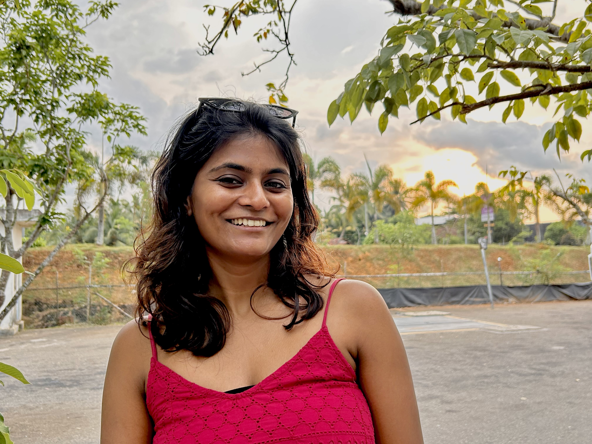

MPA student exploring the intersection of technology and democracy — from how information travels, to who controls it, to what that means for the rest of us.
See my projectsMonitors the flow of trade deals associated with technology — mapping capital, policy, and power in the global tech economy.
Tracks the volume of data flowing across the internet over the last decade — visualizing the explosion of information and what it signals.
A public portal for reporting political material as disinformation — with evidence. Building a crowd-sourced record of what circulates and why it misleads.
I'm a first-year MPA student at Harvard Kennedy School, where I'm building a policy lens for the questions that have always fascinated me: what happens when powerful technology meets fragile institutions?
My interests sit at the tension between technological access and democratic health. I'm particularly drawn to how information accelerates — the way a false claim can travel farther and faster than a correction, and what that asymmetry means for political life.
Alongside coursework, I tinker. These projects are my way of getting hands-on with data, building intuition for how systems behave, and making ideas more concrete.

Whether you're thinking about tech policy, working on something similar, or just want to trade ideas — I'd love to hear from you.